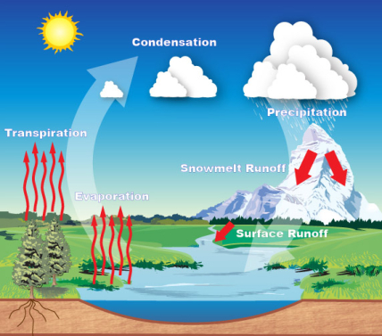

Water Cycle and Carbon Cycle
HYDROLOGICAL CYCLE
Water never leaves the Earth. It is constantly being cycled through the atmosphere, ocean, and land. This process, known as water cycle, is driven by energy from the sun. The water cycle is crucial to the existence of life in our planet.
The water cycle is composed of many parts.
During part of the water cycle, the sun heats up liquid water and changes it to a gas by the process
of evaporation. Water that evaporates from Earth’s oceans, lakes, rivers, and moist soil rises up into
the atmosphere.
The process of evaporation from plants is called transpiration. When human exhale, we release water vapour as well.
As water (in form of gas) rises higher in the atmosphere, it starts to cool and become a liquid again. This process is call
condensation. When a large amount of water vapour condenses, it results in the formation of clouds.
When a water in the clouds gets too heavy, the water falls back to the Earth. This is called precipitation.
When rain falls on the land, some of the water is absorbed into the ground forming pockets of water called groundwater.
Most groundwater eventually returns to the ocean. Other precipitation runs directly into streams or rivers. Water that
collects in rivers, stream, and ocean is called runoff.
THE CARBON CYCLE
The element carbon is a part of seawater, the atmosphere, rocks such as limestone and coal, soils, as well as all living things. On our dynamic planet, carbon is able to move from one of these realms to another as a part of the carbon cycle.

Carbon dioxide is a greenhouse gas and traps heat in the atmosphere. Without it and other greenhouse gases, Earth would be a frozen world. Carbon moves through our planet over longer time scales as well.
Steps in Carbon Cycle
Step 1: Photosynthesis
- In photosynthesis, plants, algae, and cyanobacteria remove carbon dioxide from the air and fix, or incorporate it into complex organic compounds such as glucose.
- Photosynthesis incorporates carbon from the abiotic into the biological compounds of producers.
Step 2: Decomposition, animal & plant respiration, soil microorganism respiration
- Many of the compounds are used as fuel for cellular respiration by the producer that made a decomposer that breaks down the remains of the producer or consumer.
- The process of a cellular respiration returns Co2 to the atmosphere. A similar carbon cycle occurs in aquatic ecosystems between aquatic organisms and dissolved Co2 in water.
Step 3: Partly decomposed plant and remains
- Millions of years ago, vast coal beds formed from the bodies of ancient trees that were buried and subjected to anaerobic condition before fully decayed.
Step 4: Marine plankton remains
- The oils of unicellular marine organisms probably gave rise to the underground deposits of oil and natural gas that accumulated in the geologic past.
- Coal, oil, and natural gas, called fossil fuels because they formed from the remains of ancient organisms.
Step 5: Combustion (human & natural)
- The process of burning or combustion may return the carbon in oil, coal, natural gas, and wood to the atmosphere.
- In combustion, organic molecules are rapidly oxidized (combined with oxygen) and converted to carbon dioxide and water with release of light and heat.
Step 6: Burial and compaction to form rock
- An even greater amount of carbon that is stored for millions of years is incorporated into the shells of marine organisms.
- When these organisms die, their shells sink to the ocean floor and sediments cover them forming cemented together to form limestone.
Step 7: Erosion of limestone to form dissolved Co2
- When the process of geologic uplift expose limestone, chemical and physical weathering processes slowly erode it away.
- This returns carbon to the water and atmosphere where it is available to participate in the carbon cycle once again.